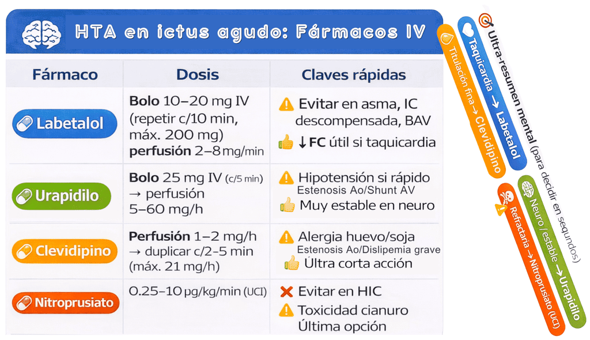
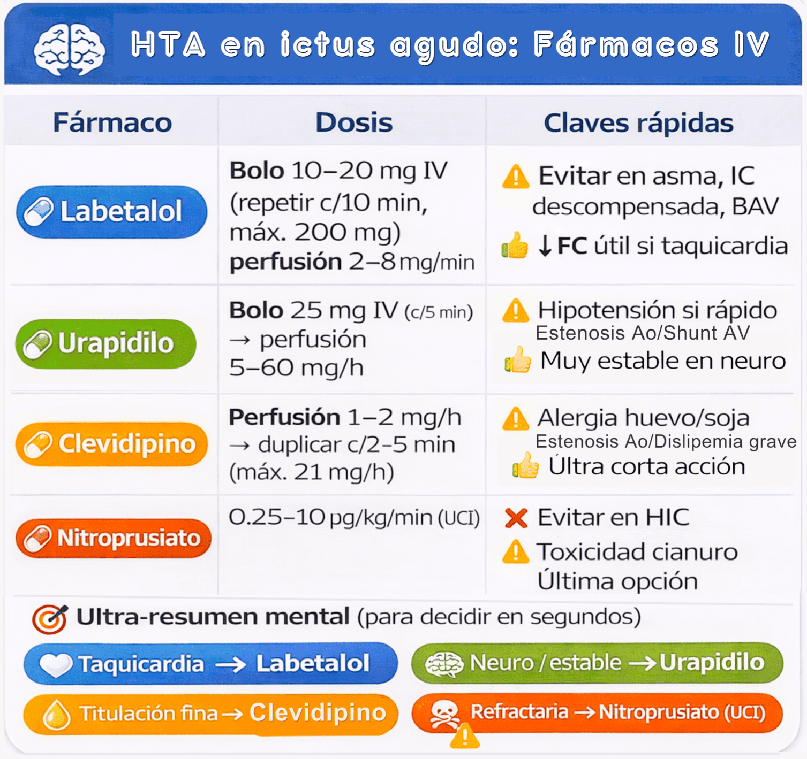

La tensión arterial debe controlarse de forma rigurosa mediante fármacos que no causen vasodilatación central ni hipotensión brusca. Durante la fase hiperaguda/aguda, todos los fármacos antihipertensivos deben administrarse exclusivamente por vía intravenosa (IV), debido a su rapidez de acción y facilidad de titulación. El uso de la vía oral o sublingual no está recomendado en las primeras horas, ya que puede inducir hipotensiones agudas incontrolables que aumenten la lesión cerebral.
Fármacos
Labetalol
- Dosis inicial: Bolo lento (1-2 minutos) de 10–20 mg IV, repetible cada 10 minutos, con una dosis máxima de 200 mg.
- Perfusión: Si no se logra el control, iniciar 2–8 mg/minuto.
- Contraindicaciones: Asma, IC, bradicardia grave, bloqueo AV 2º–3º grado.
Urapidilo
- Dosis inicial: Bolo lento (20 segundos) de 25 mg IV, repetible cada 5 minutos si no hay respuesta.
- Perfusión: Continuar con una perfusión de mantenimiento de 5–60 mg/h.
- Contraindicaciones: Estenosis aórtica o shunt AV.
Nicardipino
- Dosis inicial: Perfusión 2.5-5 mg/h IV, aumentar 2.5 mg/h cada 5–15 min, máximo 15 mg/h.
- Contraindicaciones: Estenosis aórtica severa.
- Precauciones: Puede inducir taquicardia refleja; monitorizar FC.
Clevidipino
- Posología: Iniciar a 1–2 mg/h, duplicando cada 2-5 minutos hasta un máximo 21 mg/h.
- Contraindicaciones: Estenosis aórtica crítica, dislipemia grave, alergia a huevo o soja.
- Precauciones: Control TA continuo; vida media muy corta.
Nitroprusiato de sodio
-
Posología: 0.25–10 µg/kg/min IV bajo monitorización estricta (UCI).
-
Indicación: Solo a considerar si la TA no se controla con los fármacos anteriores o si la TA diastólica es >140 mmHg.
-
Advertencia: Contraindicado de rutina en la hemorragia intracerebral, ya que como vasodilatador venoso eleva la Presión Intracraneal (PIC). Requiere monitorización en UCI.
-
Contraindicaciones: Atrofia óptica de Leber, HTIC, ambliopía.
-
Contraindicado de rutina en la hemorragia cerebral, ya que como vasodilatador venoso eleva la Presión Intracraneal (PIC).

Transición y monitorización
-
Monitorización: Control de TA cada 5–15 min durante fase IV hasta estabilización.
-
Mantenimiento: Una vez controlada la TA, se debe considerar la estrategia de tratamiento de mantenimiento.
-
Transición a vía oral: Es razonable y seguro iniciar o reiniciar el tratamiento antihipertensivo por vía oral una vez que el paciente se encuentre neurológicamente estable, pueda tragar bien (evaluación de disfagia superada) o dentro de las primeras 48 a 72 horas.
-
Advertencia: Evitar descensos bruscos y corregir hipotensión de forma inmediata.